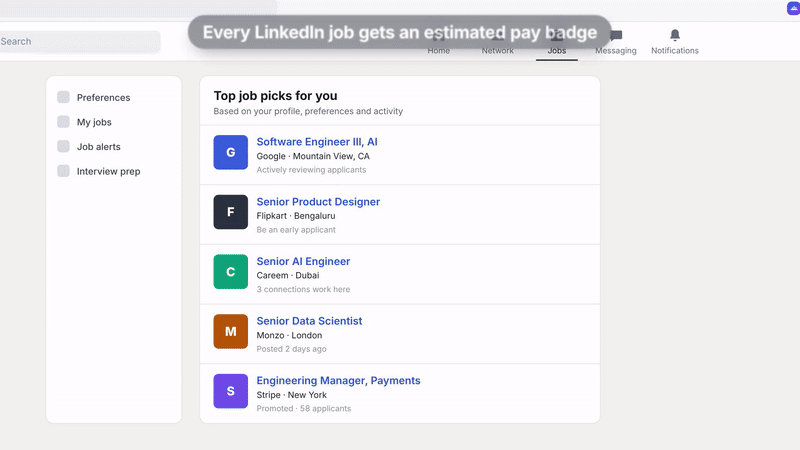
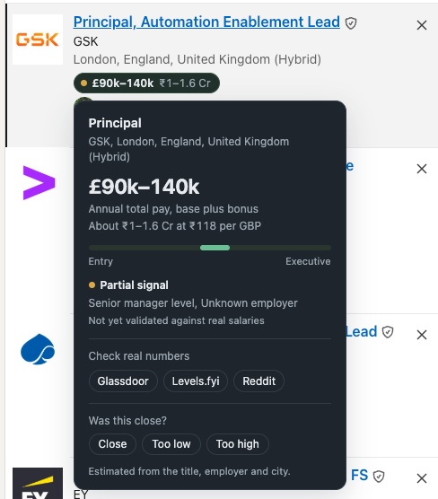

Hover a role on LinkedIn and Ballpark shows the market range for that job — not that person's pay, which nothing public can tell you. It reads what's already on the page, works out the numbers on your machine, and shows its reasoning.
Estimated market range · not actual pay
Ninety seconds, no install.

A pay badge on each row. Hover one and the estimate card opens with the reasoning.

Free and open source. No account, no sign-in, nothing to configure before it works.
chrome://extensions and switch on Developer mode, top right.Chrome only installs extensions in one click from its own store. This one isn't listed there, so the four steps above are the route — the same way any unpublished extension is installed.
Nothing, unless you add your own API key. With no key set, open the Network tab and you'll see no outbound requests at all.
Every estimate is a guess from thin evidence. These are the failure modes worth knowing before you read a number.
Headlines that list interests and former employers but no job title give the parser nothing to read, so seniority falls back to mid-level. This gets more likely the more senior someone is.
"Associate Consultant" at a strategy firm and at an IT services firm are different jobs with a multiple between them. Handled by employer tier, which is coarse.
Figures come from one matrix adjusted per metro, which can't capture a market with real internal spread — the same title in the same city can pay very differently across employers.
Labels help, but they don't fully solve it. This is why it stays hover-only, one role at a time, and why it isn't in any store.
For real compensation decisions, use levels.fyi, AmbitionBox, or a survey your employer licenses.